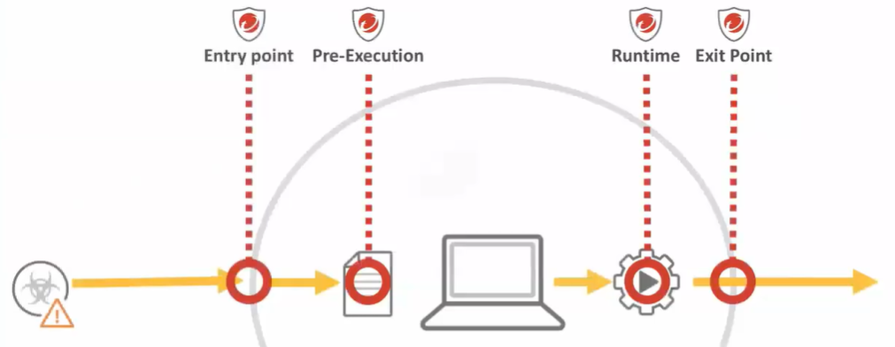

Obs: O que está em negrito é o problema e o que está normal é a solução
Automated:

Entry point:
Stop the user and the application visiting from malicious site(HTTPS)
-Web Reputation: Blocks connecions at kernel level(not only in web browsers)
OS Vulnerability Exploit
- Virtual Patching: Block new exploits with industry's most timely vulnerability research (Trend Micro ZDI : Zero day Initiative)
Browser Exploit
-Browser Exploit Protection: Detects exploits based on script Inspection and site behavior(browser plugins)
Malicious USB
-Device Control:(New on Mac) Blocks unknown removable media devices
Pre-execution:
File-based Threat(On disk): ex: EXE, DLL, Office, Document w/macros(Office permite escrever mini programas chamados de macros) - - Predictive Machine Learning(New on Mac): Scores file against a cloud-based or local/offline model to detect previously unknow threats
- - Application Control: Block execution of anything that is not on the white list
- - Variant Protection: Detects mutations of malicious samples by recognizing known fragments of malware code
- File-based Signature: Detects known-bad files
File-based Threat(In memory):
- Packet Detection: Indentifies packed malware in memory as it unpacks, antes da execução.
Run-time:
Ransoware, Mineração de criptomoedas, Files threats ..
Anything Executing: EXE, DLL, PowerShell, Document behavior inside MS Office - - Runtime Machine Learning: Scores real-time behavior against a cloud model to detect previously unknown threats
- - (IOC)Indicators of attack Behavioral Analysis: Detects behaviour that matches known indicators of attack including ransoware encryption behaviors, script launching
Anything Executing: EXE, DLL, PowerShell, Document behavior inside MS Office (In Memory technology)- - In-memory runtime analysis: Malicious script detection, malicious code injection, runtime un-pack detection
Obs: It is important to have both pre-execution and run-time threat detection capabilities in your endpoint solution because certain advanced threats such as file-less malware cannot be detected by pre-execution techniques alone
Exit Point:(stealing data)
Command and Control Server
- Web Reputation: Blocks connections at kernel level(not only in web browser)
Lateral Movement
- Host Intrusion Prevention: Detects and block of lateral movement behavior. (prevent threat to an laptop, to another laptop or to a server)
Data Exfiltration:
- Data Exfiltration Detection: DLP Detects and blocks sensitive data leaving the endpoint
- Device Control(new on mac): Blocks unknown removable media devices
Automated Response:
- Isolation (of endpoint)
- Quarantine (of a code)
- Process kill
-Execution block
-Damage rollback(ransoware)
-API capabilities(third part code)
- Rapid response protection updates to other endpoints/products (manual)
Try to filter the known and unknown data

Porque fazer soluçoes especificas para serem utilizadas na memoria do dispositivo?